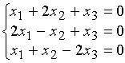
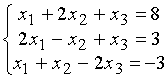
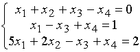
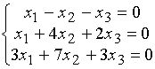
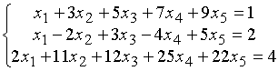
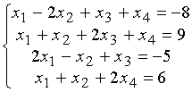
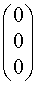
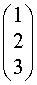
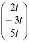
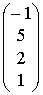

ЗАНЯТИЕ 1.4. СИСТЕМЫ ЛИНЕЙНЫХ АЛГЕБРАИЧЕСКИХ УРАВНЕНИЙ
Контрольные вопросы
- Привести общий вид СЛАУ.
- В чем особенность однородных систем?
- Что такое решение системы?
- Из чего состоят основная и расширенная матрицы системы?
- Что такое ранг матрицы?
- В чем состоит суть теоремы Кронекера - Капелли?
- Каково соотношение между числом неизвестных, числом решений и рангом системы?
- Что такое свободные неизвестные и когда их вводят?
- Сформулировать теорему Крамера.
Задачи
Исследовать, имеют ли решения приведенные ниже системы.
В случае наличия решений указать их число. Используя метод Крамера, найти решения
систем 1, 2, 6.
1.  .
2.  .
3. .
4. .
5. .
6. .
Ответы
1.  ;
2. ;
3. Система несовместна;
4. ;
5. Система несовместна;
6. .